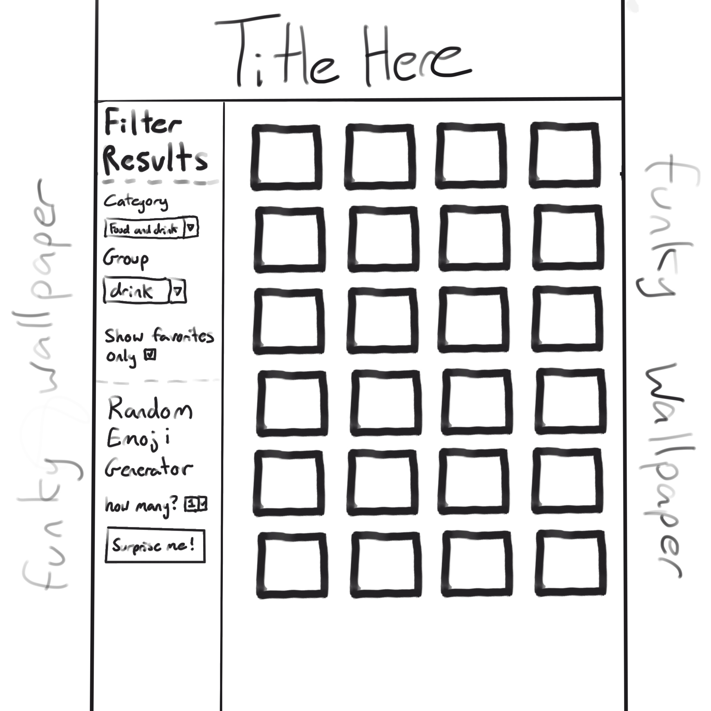
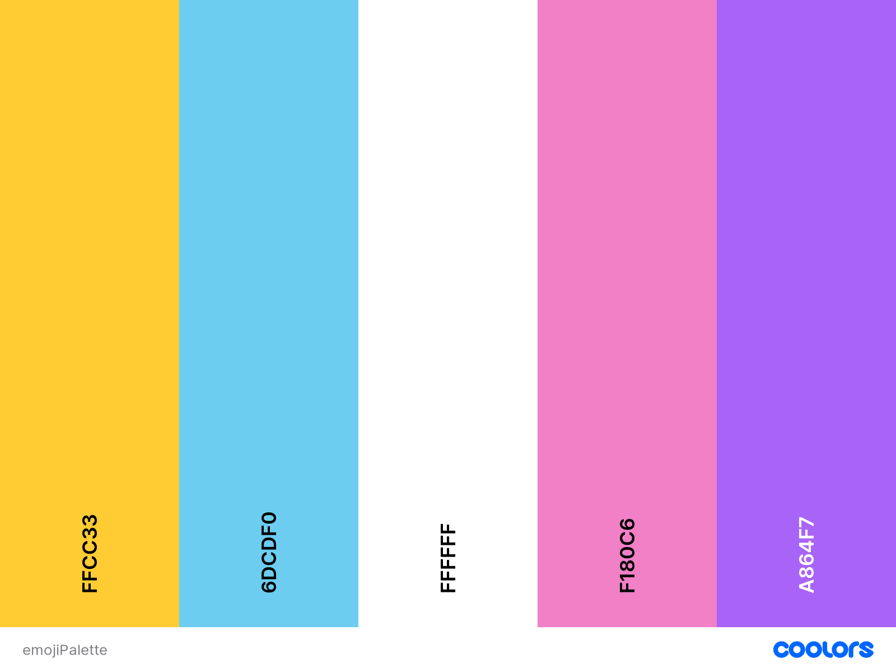

Starting out, I wanted to make an application that utilized the Emoji Hub API and allowed the user to search and sort emojis based on category and groups within those categories. Initially, I also wanted a random function that displayed a desired number of random emojis, but due to how the API handled random emojis through a separate link that generated one at a time, I ended up changing that function to also using the sorting functions from earlier. With the current way the random generation works, it only generates one at a time per button click, but you can limit the randomness by restricting it to certain categories or groups. Also, I initially had the following image as my proposed layout:
However, while creating the website, I ended up changing it slightly to have my controls up top with
the generated emojis below.
Figuring out how to filter by category went pretty smoothly, but since only the first three categories
had groups within them, I wanted to make the group selector only show up when those few categories were
selected.
Also different from the proposed image was how I planned to implement favorites. I wanted the favorites
list to be updated when emojis were clicked, and that stayed constant until the end of the project,
but instead of having a "show favorites" option in the controls, I opted to create an input field and
add clicked emojis to that instead. Because I used an input field in the final project, I made it so you
could easily remove favorites by deleting them from the field, as well as added a copy to clipboard button
which allows the user to copy their selected emojis with the push of a button. Figuring that whole situation
out took me a ton of time, trial, and error to figure out, but I'm very satisfied with how it ended up.
Color Palette used:
